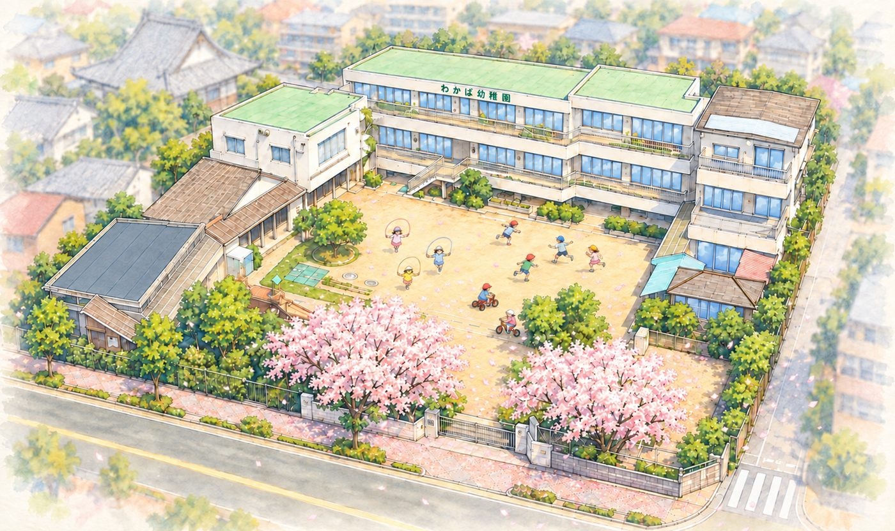
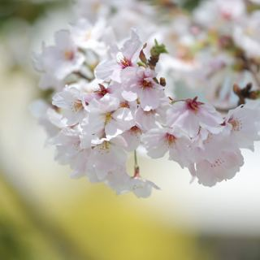
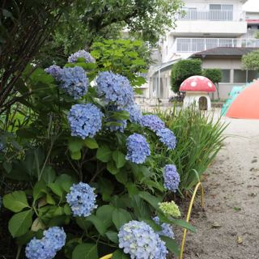
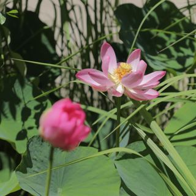
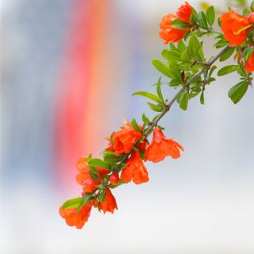
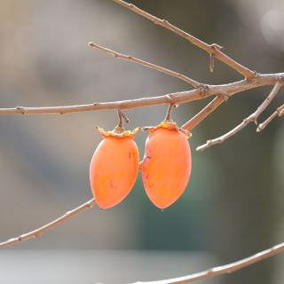
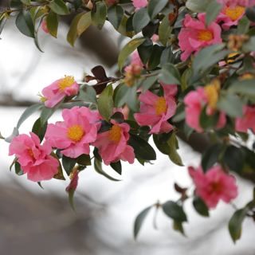
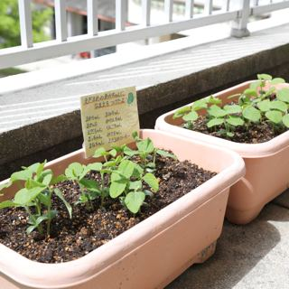

信頼される実績と歴史
昭和28年の創立から、子どものことを一番に考える保育を続けています
長い歴史
創立からの歩み約70年
修了児数5,000名超
初代が幼稚園を開園してまもなく70年！修了児数は5000名をすでに越しました。親子2代が卒業生ということも、めずらしいことではなくなりました。

実はあまり報じてきませんでしたが、上皇様のご長女の夫君である黒田慶樹さんも、わかばの園庭で遊ばれたお一人です。
沿革を見る（わかば幼稚園について）→🌳 自然豊かな園庭







園庭には、花の咲く木、実のなる木々がたくさんあります。園のシンボルでもあるみかんの木には夏ミカンが実り、子どもたちといただきます。収穫した梅の実は、年長児と一緒に梅ジュースづくりをします。自分たちで作ったジュースは、おいしさも格別です。
いちょうやもみじの紅葉の変化の様子も美しく、季節の移り変わりを自然に感じられる園庭になっています。
永年の実績と信頼の上に築かれた志を尊重しながら、深刻な社会情勢の変化にも立ち向かえるような、具体的な願いと決意をもって現在に至っています。
お気軽にお問い合わせください

学校法人わかば学園わかば幼稚園
〒464-0032 名古屋市千種区猫洞通2丁目13番地
見学は随時受け付けています。
お電話でのお問い合わせ052-782-3651受付時間 平日 9:00〜15:00